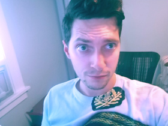

My name is Nathan Golba. I'm currently a student enrolled at Case Western Reserve University as part of their full-stack web development boot camp. I aspire to use the skills that I'm acquiring to pursue a career in the software and web development field. I am largely self taught up to this point, but I am doing my best to embrace the classroom and team environment. I've spent the last several years working restaurant jobs, and I've done quite well for myself, but I think it's time I stop serving beers to the guys at Hyland Software and start writing code for them. I believe that hard work and dedication go very, very far, and I intend on pushing myself to my mental limits on the hunt for a brighter tomorrow.
Outside of work, my interests include: motorcycles, writing, pc building, PoV action videography, going to concerts, and collecting vinyl. You can usually find me at my desk editing GoPro footage, writing lyrical poetry, and rocking out to whatever I'm in the mood for; be it alternative, punk, surf rock, or really anything.
This is only the start.